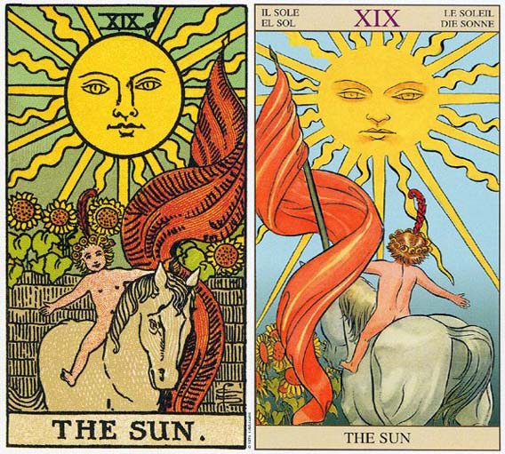

。太阳，带给生命光和热，活力十足，热情四射，欢欣鼓舞。太阳牌象征天真，正直，胜利，希望，欢乐，公开，成功。抽到此牌，代表在工作和人缘等各方面都特别理想，受到大家的肯定，推崇和更多期待。对应占星学的太阳，可以说是期待已久功成名就的那一刻，过往的辛苦付出终见成果，但这荣耀时刻毕竟只是短暂一瞬而非永恒不逝，所以不能被胜利冲昏了头，继续兢兢业业努力才是。爱情上虽然不是缠绵悱恻，却彼此坦诚信任，也许是团体里从友谊发展而来，总之是大家公认的一对恋人。接下来详细解说塔罗牌太阳。塔罗牌太阳档案
牌 名：太阳 The Sun
星 相：太阳
四 要 素：火
星座：狮子座
对应人物：Apollo
加强牌：倒吊人、星星、审判、权杖三
关 键 字：成功、自由、喜悦、阳光
坐落宫位：生命主题
含义：创造力、合作、成就。
每月19日-太阳，塔罗牌大阿卡那的第19牌“太阳”，可说是所有牌中最好的一张。它象征知识、活力和幸运，也代表值得受人尊敬和回报。这张牌正立时，具有清澈、人际和谐及美好的名声等等正面特质。牌面倒立时，则有骄傲、自负、虚伪等不利反面特性。
优点：逃脱骗局、解除误会、状况好转、预知危险、正视爱情的裂缝。
缺点：消沉、体力不佳、缺乏连续性、意气消沉、生活不安、人际关系不好、感情波动、离婚。
相关传说：十二主神之一，Artemis的挛生兄弟，太阳神。Zeus和Rhea之子。
塔罗牌太阳牌面故事
可爱的裸体孩童骑在马背上，跨越灰色的围墙，脸上带着微笑。孩童头上戴着雏菊花环，以及一根红色的羽毛。这根羽毛就是在愚人与死神出现的同一根，象征太阳牌已经跨越了死亡的界限，而重获新生。围墙后面种满向日葵，里头是一座人造的花园，而孩童跃离了花园，代表他不需要这些人工的产物，他是最纯真、自然、不需隐藏的，如同他一丝不挂的身体。向日葵共有四朵，象征四要素与小阿尔卡那的四个牌组。有趣的是，四朵向日葵是向着孩童，而不是太阳，表示这位快乐的孩童已经拥有足够的能量。马背上没有马鞍，孩童不用缰绳控制它，甚至连双手也不用，显示马匹象征的能量已经受到充分的控制。孩童左手持着红色旗帜，左手象征潜意识，红色旗帜象征行动，表示已经不用像战车那样用象征意识（右手）来掌控，他可以轻而易举、自然的控制一切。
背景的太阳是生命的源头，万物赖以为生之源，总共有道光芒，代表张大阿尔卡那（不包含愚人）。仔细一看在上方罗马数字的旁边有一道黑色的曲线光芒，代表愚人（另有一说是太阳中心圆形的部分是愚人）。值得一提的是，在比较古老的塔罗牌版本中，太阳牌中有两个小孩，与占星学的双子座相关，但韦特改成仅有一位，在此太阳牌就不与双子座产生关联，而属于太阳。这样的更改是为了避免原本的暧昧。
塔罗牌太阳牌面解释
解读一
灰色斗篷和头巾，白色的胡子代表智慧与成熟。 灯中的光芒是上帝的光。 积雪的山峰代表纯净的思想需经由智慧和经验获取。
解读二
此牌又称追求者。 [激情塔罗] 有些牌的灯是被斗篷遮住一部份。
解读三
他是个智者，在黑暗中提着一盏灯，左手持手杖， 远离世俗的喧哗，一心一意追求真理。 灯是在牌的左侧，从自己的脚照起，隐者便是保护这智慧之灯的人。 灯里有一颗星星( 希望) ，隐者带着希望，到处寻找真理。 灯里带着神秘玄奥的科学，而他的材料是手上的权杖( 生命树) 。
解读四
求道者背后有一双白色巨大的翅膀， 真正的隐者不会执着于自己狭窄的理论， 应该是拥有天使之翼，在世俗中翱翔。 套一句现代的话，就是心灵改革。
隐士身着长袍，提着一盏灯、拄着拐杖，在黑暗中孤独地摸索前进。这张牌代表独处，隐士试图放弃外在的诱惑，而达到内心的平静，进而在寂静的环境里通过冥想得到真理。寂静中只能听 到自己内心发出的声音，所以才能够更好地理解自己的想法，寻找到一个真正属于自我的最终目标。
解牌时应当注意隐士的特点，仔细查看面前的牌型，解释前再检查一遍，是否有某个细节被无意间遗漏了。
隐士象征秋天的开始，秋收冬藏的起步。此时正是拿起照妖镜自我探视的良机，彻底挖掘内在隐藏的私语，任何外在的干扰，一盖不予理会，专注再专注，直到黎明破晓的征兆自动浮现。没错，自我疗愈，是眼前最严酷的课题。黑暗不会凝固胶着，除非，你不愿意看见阳光。
通常生日塔罗中若有此牌，则表示此人定力过人，否则，必然是退缩的推托性格，难以承载大任，要看搭配的牌阵，来做出适切的判断。不过，通常能拥有这张牌，都早已心知肚明，自己是属于哪一类。
隐士牌的主宰星是处女座Virgo，生命元素属地，非常符合而贴切的稳定性格。孤独、遗世独立、深谋远虑而谨慎，是非常可靠的灵魂伴侣。
正面的隐士牌乐观进取，虽低调行事，却有着非常阳光的期待，随时等着补充能量过后再出发；来自四面八方的拥戴者，赋予无穷的能量与支持，开启全然阳光而愉悦的心情，是平时累积的声誉所带来的成就；反面的隐士，则自私自利，且需要不断地被取悦，经常处于黑暗孤独无依的状态，必须挑战自我懦弱的恐惧。
与处女座连结，代表着无私的服务工作，与司掌中阴界的智慧女神Hecate是一体两面的化身。正面代表刚刚完成圆满的探索之旅，即将进入内化而清晰开悟的过程，等待是智慧的明灯；反面则处于退化又退缩的瓶颈，毫无伴侣的长期孤独状态，让自己失去了宁静，若有人出现，必然出于自私而短暂的依赖，却能藉此学习奉献服务的课题。
此时当充份消化毕生吸收的智慧财产，等待恰当时刻，顺应时机付诸实践。巩固内在的信念，是当下的必要磐石。虽处于孤寂，却恰好是休养生息的必要阶段，慢慢习惯跟自己好好相处，而达到自我成长与体悟的精神丰收状态，重新看待自己的生命课题，逐渐找到出发的方向。此时最需要的伴侣，不论男女，都要有不任意批判的开阔心胸，才能彼此启发内在的智慧奥秘。
隐士象征秋天的开始，秋收冬藏的起步。心境虽处于静止的状态，一开始是享受，旷时日久，逐渐孳生自我怀疑与不确定的孤寂，此时正是拿起照妖镜自我探视的良机，彻底挖掘内在隐藏的私语，任何外在的干扰，一盖不予理会，专注再专注，直到黎明破晓的征兆自动浮现。没错，自我疗愈，是眼前最严酷的课题。黑暗不会凝固胶着，除非，你不愿意看见阳光。
塔罗牌太阳牌义解释
太阳充满所有积极正面的力量，温暖而光明。太阳出现，就充满希望欢欣的气氛，所有的事情都一帆风顺，而且是全方位的成功。问健康无忧，问爱情可成，问婚姻百年好合，问学业金榜题名，事业更是飞黄腾达。如果是旅行方面的预测，可能会去做日光浴，或是去炎热的国家。如果你曾经做过天气的预测，太阳当然表示万里无云的晴朗天气。如果代表人的话，太阳可能代表儿童、快乐的人、发明家、重要人士等。
当一切都如此美好，心情就会自由自在，快乐无比。此时，任何简单的幸福都会带来极大的快乐。有人问78张塔罗牌中最好的牌是哪一张？其实每张牌都有它的光明面与黑暗面，不过太阳牌大概是光明面最多的一张了。
虽然说太阳如此光明，但过犹不及，任何事情都有隐藏的危险处。太阳虽然带给我们温暖与能量，但它也能将人灼伤，将大地烤成沙漠。
塔罗牌太阳解牌参考
正位
1）人际关系非常好。
2）充沛的体力，丰富的生命力。
3）爱情美满，令人羡慕。
4）一定能够实现的约定，爱情中可能订婚或者结婚。
5）内心充满了热情和力量。
6）去充满阳光的地方进行旅游可以补充能量。
7）心满意足，巨大的成就感。
8）纯洁而快乐，无忧无虑。
9）金榜题名，飞黄腾达。
逆位
1）爱情不顺利，失恋或者面临分离。
2）忧郁孤单寂寞。
3）事情失败或者面临失败。
4）无法安定内心。
5）工作上困难重重。
6）取消的计划。
7）朋友的离去和人际关系的恶化。
8）身体不好，情绪低落。
塔罗牌太阳正位释义
1、人际财富——储蓄增加、有意外之财、财运鼎盛，友谊地久天长、与朋友关系日渐亲密、好友增加、积极的交往。
2、健康生活——体力充沛、顽强的生命力、身体康健。
3、其 他——适合户外活动、呼吸新鲜空气可以愉悦心情、怀孕、生活充实。
4、基本含义——前景明朗、活力充沛、欲望胜、得贵人相助、阳光普照。
5、工作学业——目标达成、积极主动、得遇名师、工作环境明朗、实力得以充分发挥、竭尽全力终获成功，面对课业积极上进、成绩快速进步、考试顺利。
6、恋爱婚姻——彼此恩爱有加、得到亲朋的祝福、步入婚礼殿堂、梦中情人出现、恋情公开、彼此感情日渐亲密。
7、活跃、丰富的生命力、充满生机、精力充沛、工作顺利、贵人相助、幸福的婚姻、健康的交际
8、当牌面正立时，事业上会有贵人相助，将会有更好的发展机遇。在感情方面，你们已经走出坎坷的感情之路，前面将是洒满歌声和欢乐的坦途，你们将开始规划未来的生活。
塔罗牌太阳逆位释义
1、人际财富——收入下降、奢靡浪费、因爱慕虚荣而增加开支，被同伴排挤、与旧友绝交、给人消极猥亵之感、让人无法亲近。
2、健康生活——体力不足、生活无规律、体型发胖。
3、其 它——对人和事物都无法持久、被迫外出、性格孤僻、生活窘迫。
4、基本含义——意志消沉、约会取消、情绪低落、事事无法持久、性格不开朗、感到无助、生活不稳定。
5、工作学业——听不进他人劝诫、对工作没有耐心、原定计划无法实施、后劲不足、无固定职业或短期内很难找到工作，厌学、听不进他人劝诫、缺乏耐心、成绩低落。
6、恋爱婚姻——因冲动致使感情破裂、迟迟不能步入婚礼殿堂、有分手的危险、无法破镜重圆、不被祝福的恋情、婚约取消。
7、消沉、体力不佳、缺乏连续性、意气消沉、生活不安、人际关系不好、感情波动、离婚
8、当牌面倒立时，你在事业上竞争心太急切了，把对手都吓跑了，然而也让合作伙伴感到害怕，或许你该放松些。感情上两人间出现一些小变化，开始在乎对方的态度和自己的付出，这些怀疑也许都是没必要的。
倒立的太阳
虽然太阳倒立代表你还是有一些恐惧尚待克服，不过他依然是一张正面的牌。当太阳牌正立时，生命和全世界的人都会支持你，当它倒立时，你却有某些怀疑。现在云层遮蔽了太阳，所以虽然还是白天，但温暖及光明却已稍减，因为你内心还存有在月亮牌中所接触到的恐惧感。
太阳倒立可以象征对人生及创造性抱着一种竞争的态度。这是基于对不足的恐惧——怕支援不够、怕机会或爱不够。这可能是一种根本性的恐惧，怕这个世界不会支持你的努力。在两性关系份当中，它可能暗示两个相互竞争的人。
在事业分析中，这张牌暗示要在销售或创意的工作当中脱颖而出，则必须经历极力的竞争。它可能是在描述一种颇有创意的方案，它在别人的眼中是成功的，然而你却对它有更高的期望，你要得到更多才会感到满足。所以太阳牌倒立也可视为和你自己，或和一份完美的理想竞争。
塔罗牌太阳大体上的意义
太阳是一张代表占星学上狮子座的牌，尤其是若伴随着力量、权杖皇后或权杖的其他宫廷牌。它暗示着某种富创造性的事业，包括自我表达，例如演艺事业、绘画、舞蹈或歌唱。它代表在生活、事业或两性关系上都有重大成功。
太阳象征欢乐和内在平静，而且感觉宇宙是一个充满乐趣和创造性的地方。太阳是自由的充分显现。它从意识层心智的日常限制中彻底解放，转为一种开放、觉醒及自由状态。它是一种可以带来肉体自由的内心自由。太阳显示出欢乐、和平、幸福及有创意的生活态度，并且深深体会到生命之美。
太阳拥有愚人的乐观、魔术师的目的、女教皇的直觉理解，以及女皇的热情。这张牌也包括了皇帝的务实、传教士的精神觉醒、恋人中对别人在你生命中所扮演的角色的领悟，以及战车中的感情的训练。
太阳吸收力量牌中的内在力量，隐士自反省当中获得的智慧，命运之轮对生命及其循环的任职，正义对因果循环的察觉，以及悬吊者的顺从。它还是综合了一下各牌的产物：在死亡中对改变的顺从、在节制中对行为的恰当运用、在魔鬼中对黑暗面的正视、高塔中的脱离束缚、星星中的充满信心和希望，以及在月亮中终于降入无意识中去面对恐惧，在知识和直接经验的基础上建立信心。
最重要的是，太阳是一张让你的人生和你自己快乐起来的牌。它代表一种内在的知识，你了解挑战是重要的；挑战可以考验你，让你对生命持续赐予你的一些小礼物充满感激。它也代表你知道幸福是一种选择，而且它并不需要与你周遭的有形事物有任何关联。
这或许是有人为你提供了一项快乐的课程。快乐的文凭是一张你可以戴在脸上和深埋在心中的凭证。
塔罗牌太阳两性关系上的意义
太阳所描绘的是一种既有创意、又饶富趣味的两性关系，在日常生活中随时可以见孩子般的天真和童趣。我认识一个男人，他花了很多时间想一些花样来告诉伴侣，他是如何的珍视她。从在冰箱里放一张爱的短笺，到在厨房的地板上排成一棵大的心型图案；从在起居室窗帘的褶缝里绑的小缎带，到在她的拖鞋里放两张她最爱的芭蕾舞票，，好让她在一大早起床时便发现。
这对佳偶一起玩着各式游戏，他们也洞悉在爱的关系中友谊的价值。太阳是一张能够共享生活中单纯乐趣的牌，但是他们对人生依然有着深刻的了解，并指导他们拥有一个深远的目的，无论在何时，这世界都会同心协力的支持他们，帮助他们完成它。
塔罗牌太阳爱情
正位
和他相处一定让你觉得很开心愉快吧，和他在一起好像一切都是亮的，无论什么事都非常开心，并且和他在一起也很能够让你感到开心，就好像回到孩童般那样。不仅仅是感觉上，你们感情的未来也是光明的，只要继续这样发展下去，一切都会很顺利，不会遇到任何阻碍和问题！说白了你们的感情那绝对是一片光明的节奏！
逆位
虽然表面上来讲你们的相处是愉快而轻松的，但其实你们之间还是存在了一些不太乐观的因素，只是很多时候你们不愿意去面对和触碰。并且其实你们双方性格也并不是非常的和谐，在相处中偶尔的也会遇到意见不统一导致闹得不愉快的情况，虽然有些时候你只是强颜欢笑而已。因此整体来讲，如果你们关系中的不足不进行修正，要说拥有一个稳定长久的爱情有点困难哦。
塔罗牌太阳在工作方面的启示
太阳牌代表世间的光明和俗世的成功，守护神是从远古以来就为各民族尊崇的太阳神。
当我们形容一个人个性像太阳的时候，他（她）可能有什么样的特质？
“光明”：做事光明磊落，不会偷鸡摸狗、讲闲话、扯烂污，也不可能两面三刀、做假账、背信忘义。
“开朗”：可能常带微笑，或者眼神真挚肯定，不会给人乌云罩顶的不幸感，凡事负面思考；也不会一见面就对你吐苦水发牢骚，好像随时准备调头寸。
‘‘温暖”：可能是外表健康干净给人的信赖感，也可能是擅于运用肢体语言，拍肩搭背，握手厚实，热情大方。
“吸引力”：人缘极佳，老少通吃，就像太阳普照万物，这种人永远是聚会的焦点，甚至人不在现场，也会成为话题主角。
进一步说，当一个人的运势像太阳的时候，他（她）可能如何？
“日正当中”、“如日中天”、“旭日东升”都是马上跳出脑海的成语，每一句都是好话，不但充满希望，而且是荣耀、名利、成就的高峰。
太阳牌当然有反面，就像一个红彤彤的太阳，也有其缺点与威胁。
当一个人的个性或运势呈现太阳的缺点，又会是什么？
“自我”：太阳系以太阳为中心，太阳的“阳刚”常常变成忽略别人的细微感受，认为“我能，你为何不能”，以自我意志为中心。
“骄傲”：因为享受太多赞美掌声，自认凡事手到擒来，常出现陴睨同侪、甚至间接功高震主、威胁主管的情况。
“工作证”：逼迫自己也逼迫他人，不断发散能量的结果，只出不进，学习中断，快速老化。严重的可能有躁郁症倾向，手边一没有工作就自我价值低落。
而运势走低时，和太阳相关的成语也变成“日落西山”、“日暮送穷”、“夕阳无限好，只是近黄昏”。昔日的光辉明显转为缺乏竞争力的恐龙个人或企业。
还记得“北风与太阳”的童话吗？看似强盛的一方往往也有力不能逮之处。世界上没有一种力量是十全十美、所向无敌的，现在的“天之骄子”、“当红巨星”请警惕。
塔罗牌太阳图案占卜应用
太阳一直都是光明热力的象徵，更代表生命的赋予和创造，太阳也一直都代表人类的意识与知觉，甚至是自我精神和灵魂的象徵。太阳是最重要的天体，也是运行轨迹最规律的，人类多仰赖太阳的时序而生活作息，甚至主宰着时间光阴，也是人生和生活的象徵。画面中太阳光芒所代表的十二宫寓意，即是包含所有的人生事项，也象徵时间性，是太阳的运行轨迹的浓缩。
太阳的影响力多是好作用，因为光明灿烂，就跟健康旺盛很有关连。这张牌要表达的就是，如日方中的景致，一定是很旺的境界，处於高峰与颠峰时期。这张牌占卜事件的时候，无疑都是成功和成就。太阳牌这麽强大的能量，当然也表示一种健康的力量，而除了身体强劲健壮，更是精神奕奕，神采飞扬。整个人充满蓬勃的生命力和朝气，生活也感到无比新鲜的乐趣。
因此我们所要注意的重要，在於太阳底下出现的是什麽，这就是作者对这张牌要表达的意念。画面中最明显的特徵，就是红布条的飘扬。www.yw11.com小孩手握旗杆，挥舞着红色旗帜，，就像要揭櫫一件大事的开始和举办。让红色的涵义的动感更为强烈，带来生命活力和欣欣向荣。红色是最为鲜艳的颜色，蕴含着强大的能量，在精神和物质上，自我和他人的关系上，都是光与热的作用。红色象徵革命胜利和博爱，也暗示着不断创新改变和分享的力量。
红色最基础的象徵就是生命的力量，包括物质层面的基础，也就是生存和根着於地，在精神上是一种成熟而执着恒久的感情，对生命的热爱，生命力和意志力的旺盛。红色给人热能和温暖的感觉，象徵内在感情丰富充沛，也是一种透过沟通快速表达的能量。
红色是深层和热烈的感情，也是紧密相依的意味，这样的感情是很强烈的。红色放在旗子上，代表昭揭这样的意图。红色所透露的爱，是无私的爱，对一切人事物的喜爱和热爱。能够包含爱情的热烈，也能包含所有的人类之爱。於是红色的感情也能拓展到广泛的博爱上，一视同仁的散布热诚，是太阳牌无私的热力。所以也能代表兄弟之爱、人类之爱的象徵。
占卜的时候，红色表示内心温暖、态度真诚，以及无私的心境，而这样面对他人都能创造出美好的关系。询问感情状况的时候，更代表一种真诚热烈的爱情，热情直接毫不隐晦，所以并不会暧昧不明，是一种光明的结合。当然也代表快乐美好而甜蜜融洽的亲密关系。因为太阳与红色的保证，问到订婚和结婚，都是美好的答案。红毯都已经要铺上了，任何婚约和婚事都会达成，而已婚者更是保证快乐幸福的婚姻生活。
太阳牌所涵盖的不一定是狭隘的爱情，画面并没有特别限定在两人世界，可以包含各种人类的感情，一切健康融洽的关系。甚至可以说，太阳牌所显示的爱情，是爱情之中包含着友谊，彼此能够真挚对待而无私的爱情。至於这张牌在朋友关系，以及友谊、友情等方面，也都是良好的状况，能够互相关心扶持。红色所具有的强力的约定的稳定作用，也让所有合作事宜能够顺利。
白马上裸体的小孩，是一种超自然的神奇的、命运的力量。人类的独特特质要以小孩来形容，也就是单纯的感受以及无邪的智慧。无论到哪里，太阳慈祥的脸总会观照着小孩，如同他是太阳的分身圣灵。也因此小孩有一些神奇的作为～不用驾驭他的坐骑就能与马匹自然相处，几乎完全协调融合在一起，并且一起活动自如。太阳之子代表自我觉知的心灵受到启蒙，而白马是动物自然的本性，复苏的心灵是有意识的层面，将引导自然天性和潜意识，在完美的协调的状态中向前行。
小孩裸身意味着完全敞开心胸，他的姿势呈「大」字状更突显这个意义。小孩子的神态，是一种心满意足。这张牌也代表着满意和知足，并且在物质和感官上的快乐，常生活中的愉悦，源於单纯事物的喜悦。而在这种的单纯的状态之下，更能代表这个欣欣向荣的世界。
小孩头上所戴的向日葵花圈，是表明他与太阳的连结，也暗示着人与自然的结合，太阳的精神力赋予人类。也因为小孩的纯真，能够真正拥有着自然之图章the seal of Nature和艺术之图章the seal of Art，也就是具有对自然的接受力和艺术的才能，这张牌显示了艺术方面有所成就。
围墙代表了一道屏障，划分了两个不同的世界，这表示人类观点形成的分别。唯有超越的意识，如同太阳般普及万物，才能有广阔的视野和包容的心。石墙是一种隔绝的作用，挡住了外来的危险，但也可能形成一种障碍。这张牌也有保护的作用，除了围墙之外，红色的旗子也代表保护，这种保护力量是不让外界的成分侵入的，是一种封闭式的作用，有一点压抑和限制。
在围墙之後的是一座看不见的花园，代表现实面人生的原本状态，在其中的生活稳定规律而受到保护。但有一天也可以跨越界限，这样将会看到更丰富的世界。小孩与白马象徵精神面的超越，跳离围墙就是跳脱藩篱，让身心和行动自由自在，也暗示应该打破人与人之间的隔阂，化解冷漠的心境，让自己拥有更广阔的视野。而接着就能如同小孩与白马，继续往更辽阔的旅程前行，这样才能真正地茁壮成长，让无远弗届的思绪如同太阳普照大地。
塔罗牌太阳(伟特塔罗篇)
虽然金色曙光关于塔罗大牌的对应体系有些牵强，但是这里将太阳牌与太阳对应还是很明显。伟特牌保留了马赛牌中墙壁符号，但以一个裸体小孩代替了双子人物。这里的裸体小孩骑于白马上，手持象征胜利的红色旗帜。上方，画成人脸的太阳放出22条光芒，在原始的伟特牌中，太阳顶部有一条光线由于被牌的数字挡住所以样子有些奇怪。这22条光线对应22张塔罗大牌，如此便可以认为发出这些光线的源是一个炽热的真理。
四朵向日葵是物质世界的产物，对应四组小牌、四重世界、四元素、四方位和四季节。在月亮牌中的那只甲壳动物现在得到了重生并称为一个小孩，他从这里的花园出发并开始与整个世界分享自己的喜悦。在伟特塔罗牌的原始版本里，图中的右下方即绘图者史密斯签名地方的下面有一个模糊的英文单词“Love”，这个细节可以说是史密斯在绘图过程中所记录的感受。小孩的头上有一根羽毛，这根羽毛连结这小孩头部与太阳的一条光芒，这根羽毛亦是愚人头上的那根，所以也反映了太阳牌与愚人牌之间的连系。太阳牌表达的是光明、一种内在的觉醒、同时也代表了胜利、成功与欢乐。
塔罗牌太阳解释网友问答
塔罗牌太阳解释问题一：塔罗牌 太阳 正位
最近马上面临高中升大学，今天占卜了一下塔罗牌，翻到了太阳正位这张牌，想问意味着什么。
网友解答:你能进入你想进的学校或者达到你想要的成绩。正位太阳有希望达成的意思。
塔罗牌太阳解释问题二：塔罗牌中太阳正位对经济状况的暗示
最近在财务上出现很严重的危机，塔罗牌抽的太阳正位，请问代表什么？
网友解答:你要放轻松，SUN的正位代表了你有贵人，就像航行于波浪起伏的海上，贵人如风，吹船前行了，SUN象征前途光明，向前看，祝你好运。
塔罗牌太阳解释问题三：用塔罗牌占卜未来发展阵的结果牌是太阳逆位
下半年主管爱情、工作和成就的塔罗牌是权杖3、权杖皇后和权杖1的正位，但是主管财富的牌是大阿月亮逆位以及结果牌也是大阿太阳逆位，加上底牌权杖四逆位来看，是不是下半年所做的努力不会有回报，并且会不时有悲观情绪围绕，让对局面毫无准备的我无法控制，最终抱憾收场？
好担心！有没有人帮我解一下？
网友解答:不建议这样使用塔罗牌,解牌可参考下面
爱情工作与成就的牌均属权杖组,估计你是拥有火象的性格,努力做事而不气馁,权杖3说爱情方面你不能处于被动,否则将寥寥无收获;权杖后说工作方面你必须得学会收敛,除非必要时少说话,你对成就的定义并不清楚,权杖1可忽略不解
财富为月亮逆的话,表示你的收入不多,但好在支出也不多,横财和破财的机会极少.结果牌也是没存在意义,结果牌是事情发展系列中才会出现的牌,底牌为权杖4逆位表示你最近走向低谷,对你原先的冲劲和态度产生怀疑
总体来说,你下班年的情况中等偏下,你的优势是容易坚持并且为之愉悦,但你的劣势估计是缺少计谋和规划.
塔罗牌太阳解释问题四：求解一副塔罗牌，关于复合的，过去是正位太阳，现在是正位世界及正位恋人，未来是正位审判
背景是与男友因矛盾分手，男友提的，他觉得我脾气不好。事后一直给我机会，但我一直不肯给他让步。后来两个人断联一个月后恢复连续，男友态度冷漠，但依然会接电话及回复，但感觉还是比较抗拒，切出以下牌局，还望好心人看看
网友解答:过去是正位太阳，现在是正位世界及正位恋人，未来是正位审判
过去在一起的时候还是蛮温馨的，平淡的生活却也很温暖。或许因此也会怀念过去，想再开始吧。
现在若有一方愿意主动一些，不犹豫不决，果断的去做些事，那么复合是可以实现的。但这样拖下去无济于事。
未来，想继续下去的话，必须敢于去面对你们之间的问题，是过去所忽视的。并且得接受些新的东西，这样可能一开始会有些不习惯，但久了就会发现这样会是你们的关系更近一步。
嗯，就是这样。
塔罗牌太阳解释问题五：塔罗牌，愿望实现牌阵
愿望：战车正位 处境：吊人逆位 该知道的：力量逆位 影响：塔正位 该做的：恋人正位 未来：命运之轮正位 偶然：死神逆位 捷径：正义正位 结果：皇帝正位
问题 ：怎么让她离不开我？
另外说明：现在想起来还是真的好喜欢她，她是护士现在这段时间正在准备考职升护师，现在很忙，前一阵子发了个几个短信没理怎么我，后来一直没联系了，这个星期天考试就结束了。。我现在该怎么做？我不会就这样跟她分开吧？
跪求大神解释牌意！！！！！！！回答详细的可以追加分数！！！在线等 急！
网友解答:对他不要那么强势和紧追不放，每个人都有自己的追求，对她来说，考试很重要，无论你是他的什么人，不能阻止一个人的积极的向上，我建议你等他考试结束。
现在，无论你做什么都不能肯定你们之间是不是有结果，不要犹豫不决了，她的心思也没有放在这个上面，你现在要做的，不是紧逼，而是暂时放开，等她考试结束后再约他沟通
塔罗牌太阳解释问题六：我和男朋友因为吵架，第三者介入，男朋友现在选了第三者，目前情况我跟他很糟糕，我抽牌的时候想的问题是：我跟他能不能挺过这一关，以后我们像重新认识一次那样重新再来，不是说复合，而是说有没有机会重新恋爱，放下过去一切，谢谢了
网友解答:新手试着解一下，现在的战车逆位意思是你过于鲁莽冲动缺乏交流，而且有第三者介入，对方心意皇后表示他比较喜欢温和会照顾人的女孩，第三方可能是这种特质的，未来发展太阳是一张好牌，走过月亮的迷茫跟恐惧，最终见到太阳，会重新恋爱，有可能是新的也有可能是旧的。求反馈，解的不好勿喷。。。
追问：
谢谢了，好像是这样，他也说第三者对他很好，送各种昂贵的礼物他，应该比我温柔，那我们能克服这现在的状态吗，就是以后新的恋情也许就不会是他，如果他心里还是放不下我呢，他也说我对他很好，我一直是精神上支持他，他家比较穷，我也从来没有要求他给我什么，之于吵架是因为我觉得他不爱我，才经常吵的。
追答：
只能说太阳是一张正面的好牌，会有好的结果，但具体是你这边有更好的出现还是你们俩在一起我是真不知道。撇开塔罗我换个说法吧，你前男友他现在就是觉得你不可理喻，而且现在他身边又出现了一个对他好，条件又好的女生，他何乐而不为呢，我给你的建议就是该干嘛干嘛，放不下就默默的关心他，不要再纠缠吵架，可能有一天你自己发现不值得了呢。
塔罗牌太阳解释问题七：塔罗牌爱情解读，自己 太阳逆位，对方 正义逆位，彼此关系 力量逆位，未来发展 女教皇正位。
看到你在其他问题的回答慕名而来哈，和一个男生相亲认识了差不多一年，联系不多，最近好像有点矛盾，想知道未来发展。谢谢~
网友解答:太阳逆位的话，你心里对他其实不是很满意，总感觉不是你想要的人，对于未来也比较迷茫。至于对方，我有种奇怪的感觉，他对于你也不是特别喜欢，说句不好听的你别生气，他把你当备胎看。总而言之，你们只是因为年纪关系，身边又没有其他合适的人，只能这样不尴不尬的处着。
未来，怎么说呢，因为没有小牌，解读起来比较卡手。但是大致的意思是，你需要相信你的直觉。感觉你像是女祭司里面的女生一样，是一个比较安静文静的女生，对于这段关系你其实早就有了自己的想法不是吗。